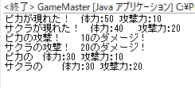
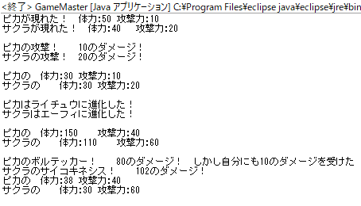

既存のオブジェクトの問題点
ここのでの知識で作ったオブジェクトにはある問題点を抱えている。 具体的には、PikachuのattackToPikachu(Pikachu target)には問題点がある。
それを示すために、新たにイーブイのクラス
Eeveeを追加し、Pikachuクラスも新たなメソッドを書き加える。
PikachuとEeveeには共に、攻撃用のメソッドとしてattackToPikachuとattackToEeveeを持っている。
いまはポケモンが2種だから良いが、ポケモン800種もいる場合、全員分の攻撃メソッド800個を準備しなくてはならずとても困難。
この大変さはポケモンの種類の2乗に比例して増加していく。 例えば、801番目のポケモンを追加する場合、800匹分のポケモンに攻撃メソッドを書き加えなくてはならない。
継承という機能を理解することで、このような問題も解決することができる。
オブジェクトの継承
ピカチュウとイーブイは"ポケモン"である。すべてのポケモンに共通する事項を記述するクラスPokemonの作成に試みてみよう。
先程のまでのPikachuとEeveeの機能のほとんどをPokemonで記述した。
攻撃メソッドはattack(Pokemon target)として、引数にPokemonオブジェクトを要求するようにした。
では、
Pokemonクラスの機能を持ったPikachuとEeveeを作ってみる。
次のように書くだけで良い。
2行目の様にクラス名の後にextends 引き継ぎたいクラスと書くことで機能を引き継ぐことができる。この引き継ぎのことを継承と呼ぶ。
PokemonはPikachuとEeveeの機能をほとんど含んでいたので、書くことはほとんど無い。
しかし、コンストラクタは書き直す必要がある。Pikachuのコメント参照。
さらにうれしいことに
PikachuとEeveeオブジェクトはPokemonオブジェクトとしても扱われる。
つまり、attack(Pokemon target)の引数にPikachuとEeveeのいずれも指定することができる。
このようにattackの引数にピカチュウやイーブイを指定してもエラーは出ない。
attack(Pokemon target)メソッドを活用することで800個もメソッドを作る必要はなくなる。
ここまで正しくかけていれば次のように表示されるはず。

もちろん、
PikachuとEeveeは他のポケモンにはない固有の能力を追加で記述することも可能。